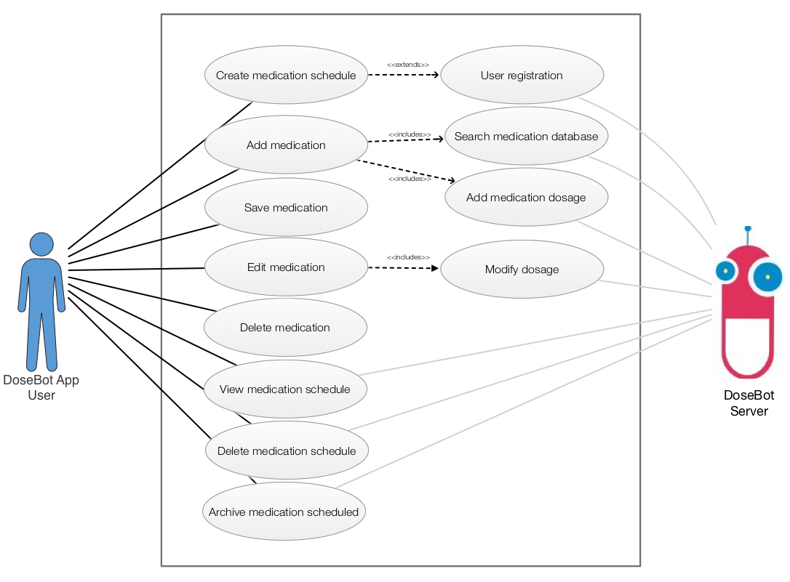
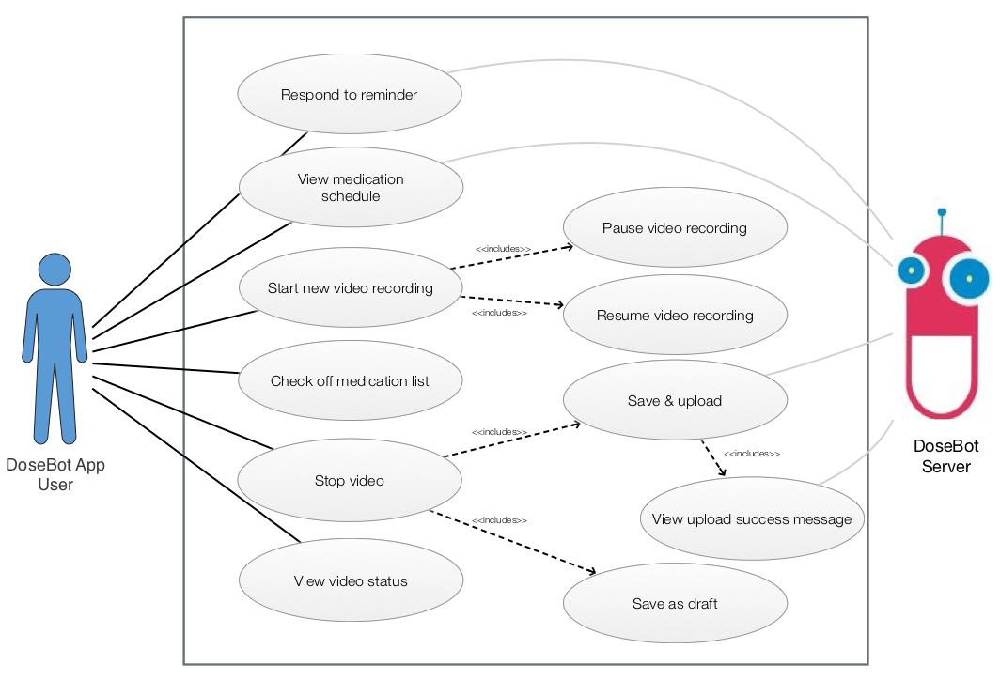

Isabelle is an independent and optimistic young woman. She’s strong-willed and determined to succeed in life.
Student
Independent Isabelle is 21 years old and is a student in 3rd level education, studying for a degree in Business Management. She lives in Grahamstown, South Africa, with her two friends from college. She works part-time as a waitress, in a cafe near her college. She has three younger siblings and visits them and her parents every weekend.
Isabelle has done contemporary dance from a young age and is a member of Grahamstown dance society, where she trains three times a week with her dance troop.
She also has a love for baking, having grown up with a mother who always had an apple pie in the oven.
Isabelle also loves to relax with a book after a long day at college, and enjoys hanging out with friends and family at the weekend.
She hasn’t travelled outside of South Africa yet but dreams of travelling the world one day and would love to spend a year working overseas, in the UK or Ireland.
Isabelle is a digital native and so tech is part of her everyday life. However as an adopter of new technologies, she’s more of an early majority than an early adopter and prefers not to ‘learn’ how to use a new piece of tech but goes for applications that her friends are using and that she feels are intuitive - easy and straightforward to use. She uses apps for communication, views content for entertainment and uses calendars and notes for reminders and college work.
She also does a lot of online research for her studies and college projects. She likes apps that help her organise herself and manage her study time and her daily tasks.
Isabelle is a very independent and optimistic young woman. She’s strong-willed and determined to succeed in life. She is very respectful of her parents and how hard they have worked to give her the opportunities she has.
Independent Isabelle would like to be more in control of her TB treatment and feels DoseBot would assist with her medical adherence and give her the flexibility needed to keep up with her studies, while educating herself on how to keep fit and healthy, both mentally and physically, while she undergoes treatment.
To have flexibility around the TB DOTs programme, so she can take her pills where and when she wants to, allowing her to continue her studies with as little disturbance as possible and complete her degree as planned.
As a TB patient
"I want to record when I have taken each daily dose of my medication."
"So that I can be part of a DOTs TB programme and work my treatment plan around my own schedule."
To have a list of all the drugs she needs to take each day, so she can plan out her day ahead of time and know what needs to be taken when.
As a TB patient
"I want to see a list of all my prescribed daily medication."
"so that I can make sure I've taken the correct pills and associated doses."
Every morning at 6am, Isabelle opens DoseBot on her smartphone and reads through the list of pills she needs to take that morning. She takes the dose for each pill, out of her pill bag and gets a glass of water. She starts to film her pill-taking with her phone and confirms when she has taken each dose. Once she’s completed and confirmed she's taken all her doses, she saves and uploads her video, so her healthcare professional can check her adherence against her treatment plan.
She is now finished her medication for the morning and she can head off to college, knowing that her progress has been reported to her doctor and she is one step closer to recovery.
Click on Use Case to expand..
ID: UC-010 |
Name:Create a medication schedule. |
Level:User goal |
Priority:High |
Frequency of Use:Occasional, depending on treatment regime. |
Description:The DoseBot user wants to create a medication schedule of all their prescribed pills and any additional supplements they need to take, so that they can make use of the core functionality of the service and adhere to their daily medication regime. |
Trigger:User is prompted to create medication schedule after registering on the system (UC-01) |
Actor:TB patient using DoseBot app. |
Preconditions:
|
Postconditions:
|
Basic Flow: |
User Objectives |
System Responsibilities |
|---|---|
A. User wants to CREATE medication schedule: |
1.) The user accepts the invitation to create a medication schedule for their treatment by clicking on link. 2.) System sends user directly to Schedule page in application. |
B. User wants to ADD medication to schedule: |
3.) User is presented with a search bar to search for medication by name. 4.) System searches a medical database for the inputted name or by anything close to the name. 5.) The system displays the search results to the user. |
C. User wants to SAVE medication to schedule: |
6.) Once the user has found their medication, they select it by clicking add. 7.) The system shows the chosen medication by name and image, with a field for dosage details to be added, including days and times. System automatically sets a default reminder for 10 mins before scheduled pill taking time. 8.) After each medication is selected and dose added, system prompts user to save to schedule – user cannot move on until they have pressed save or discard. |
D. User wants to EDIT medication: |
9.) If the user has chosen an incorrect medication from the database but has the correct dosage in place, they can amend the medication name, without affecting dosage. 10.) System searches database again and displays medication names. 11.) User selects correct medication and it replaces existing one. |
E. User wants to Delete medication: |
12.) If the user has chosen an incorrect medication from the database or no longer needs to take that medication, they can delete it, along with dosage. 13.) System deletes selected medication from schedule. |
F. User wants to VIEW completed medication schedule: |
14.) Once the user has completed their full medication schedule, they can view the medication schedule in full, or choose filters to view it - days and/or times. 15.) System presents all selected medication and inputted dosages as a full schedule or filters view by selected criteria. |
G. User wants to DELETE medication schedule: |
16.) User can choose to delete full schedule with all inputted and saved data. 17.) System will ask user for confirmation to delete before performing the task. |
H. User wants to ARCHIVE medication schedule: |
18.) User can choose to archive medication schedule, if they would like to return to it at a later stage. 19.) System archives full medication schedule and asks user to create a new schedule. 20.) User can accept or cancel and return later to set one up. |
Alternative Flows: |
A1. Alt flow:If the user doesn’t accept invite upon registration, to create a medication schedule for their treatment, they can go to Home Page and click into "Schedule" and create schedule from there. |
B5. Alt flow:If the user can’t find their medication by searching in the database by name or anything close to name, the system will present the user with an option to ‘add new medication’. User can input the medication name manually and fill in dosage and save to schedule. |
C8. Alt flow:If the system fails on saving selected medication and or dosage to the schedule – system notifies user that an error has occurred and returns users to Basic Flow point 2 – add medication. |
D9. Alt FlowIf the user has added an incorrect spelling for any ‘new medication’ manually added, they can edit medication name, without affecting dosage. |
D.11 Alt Flow:If the user has added an incorrect dosage, day or time beside any of the medications, they can edit dosage, without editing or deleting medication name. |
Diagram: |
ID: UC-011 |
Name:Take Medication |
Level:User goal |
Priority:High |
Frequency of Use:At least once a day. |
Description:The DoseBot user wants to record themselves consuming their medication, so that they can demonstrate treatment adherence to their healthcare provider. |
Trigger:DoseBot prompts user to take their medication through reminder. |
Actor:TB patient using DoseBot app. |
Preconditions:
|
Postconditions:
|
Basic Flow: |
User Objectives |
System Responsibilities |
|---|---|
A. User Wants To Access Take Medication Page |
1.) System sends user reminder to take their scheduled medication. 2.) User clicks on link in reminder and system knows they are on a registered VDOTs programme from their registration process and brings user directly to Take Medication page, where camera is enabled. 3.) If there’s an unfinished/paused recording, system will ask user if they want to resume session or start new session. If there’s no unfinished sessions, the user will not see either option but just be presented with the universal smartphone sign for RECORD. |
B. User Wants To View Medication Schedule |
4.) System displays medication schedule for that day. 5.) System displays results based on time of day each drug's has been inputted for in the patient's schedule - morning/afternoon/evening/night. |
C. User Wants To Start Video Recording Session |
6.) User presses record on video and positions his/her head in the markings on the video screen. 7.) System gives user countdown to filming - 3/2/1 8.) User proceeds to take their scheduled pills, once video is recording. |
D. User Wants To Check Off Medication List |
9.) User ticks dose boxes on screen, beside each scheduled medication, after each dose has been taken. 10.) System updates doses taken, with tick in each box. |
E. User Wants To Finish Vdots Session: |
11.) User presses STOP under video screen, when all scheduled mediation has been taken, and boxes ticked beside each dose. 12.) When user presses STOP, system prompts user to SAVE DRAFT OR SAVE and UPLOAD. 13.) User chooses SAVE and UPLOAD. 14.) System uploads video and medication information to DoseBot server. 15.) System shows user a green tick on screen for a successful upload. |
F. User Wants To View Video Status |
16.) User can view progress of video approval by their health-care professional, by navigating to "Video Status" and viewing status there. 17.) System shows user video status bar - Green (approved by health-care professional), orange (in progress), red (not seen). |
Alternative Flows: |
A1 and A2 Alt flow:System fails to send user a reminder to take their pills or user can’t click through to “Take Medication” page from the reminder – user can then go directly to “Take Medication” page via the DoseBot TODAY screen (app homepage). |
B4. Alt flow:User hasn’t set up their medication schedule, so no medication listing appears on the "Take Medication" page. System redirects user to "Schedule" page, to create their medication schedule. User can then navigate back to start their recording. |
E13. Alt flow:User chooses to SAVE and UPLOAD video but the wi-fi connection is bad or non-existent – system notifies user by displaying a reassuring message, then the app stores the video locally and upload happens once there is a viable connection. |
F17. Alt FlowUser goes to view status of video a few days after a successful upload but sees the video approval is still at red. System allows user to email a notification to their health-care provider, directly from ‘my reports’ page and alert them of the unapproved video. |
Diagram: |